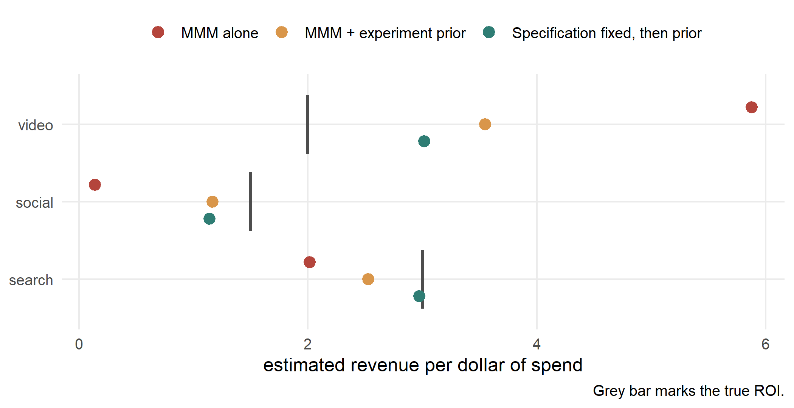

Calibrating a Marketing Mix Model With an Incrementality Test in R: Why the Experiment Loses
Everyone in 2026 says to feed your geo test into your MMM as a prior. On data where I set the true ROI myself, doing exactly that left the answer 77% too high.
Every measurement roadmap published this year lands on the same advice. Stop arguing about marketing mix modeling versus incrementality testing and triangulate instead. Run the geo test, turn its result into a prior, and let the MMM reconcile itself against experimental ground truth. This is not vague advice any more, which is what makes it worth testing. Google’s Meridian is the reference implementation, it replaced the deprecated LightweightMMM in January 2025, and the whole thing is public: Apache-licensed Python at github.com/google/meridian, with the calibration path documented step by step. Its helper for the job takes the experiment’s point estimate as the prior mean and the experiment’s standard error as the prior standard deviation.
I ran that recipe on simulated data where I picked the true ROI myself. The experiment was right. The calibrated model was not.
library(rstanarm)
library(ggplot2)
options(mc.cores = 4)
set.seed(20260826)
n <- 156 # three years of weekly national data
ar1 <- function(n, rho) as.numeric(stats::filter(rnorm(n), rho, method = "recursive"))
z <- function(x) as.numeric(scale(x))
demand <- z(ar1(n, 0.80)) # category demand, promo pressure, competitor pullback: UNLOGGED
budget <- z(ar1(n, 0.90)) # the total media budget cycle, which moves every channel at once
search <- pmax(60 + 12 * budget + 8 * z(ar1(n, .4)), 5)
social <- pmax(45 + 10 * budget + 6 * z(ar1(n, .4)), 5)
video <- pmax(35 + 7 * budget + 5 * z(ar1(n, .4)) + 6 * demand, 5)The only editorial choice in there is the last one. Video spend loads on demand, because media
plans are written by people who push harder into a strong quarter. Nobody logged that variable,
so the MMM cannot condition on it. That is the entire disease.
Geometric adstock, normalized so a channel’s coefficient reads directly as revenue per dollar of spend:
adstock <- function(x, rate) {
as.numeric(stats::filter(x, rate, method = "recursive")) * (1 - rate)
}
a_search <- adstock(search, 0.3)
a_social <- adstock(social, 0.5)
a_video <- adstock(video, 0.6)
roi <- c(search = 3.0, social = 1.5, video = 2.0) # the answers, chosen by me
revenue <- 800 + roi["search"] * a_search + roi["social"] * a_social +
roi["video"] * a_video + 45 * demand + rnorm(n, 0, 25)
trends <- z(demand + rnorm(n, 0, 0.75)) # a noisy but observable proxy, used later
mmm <- data.frame(revenue, a_search, a_social, a_video, trends)[13:n, ]What the MMM says
naive <- lm(revenue ~ a_search + a_social + a_video, data = mmm)
round(summary(naive)$coefficients, 3)
## Estimate Std. Error t value Pr(>|t|)
## (Intercept) 786.622 14.910 52.759 0.000
## a_search 2.016 0.362 5.566 0.000
## a_social 0.139 0.466 0.298 0.766
## a_video 5.876 0.354 16.607 0.000Video returns 5.88 dollars per dollar against a truth of 2.00, with a 95% interval of [5.18, 6.57]. Social comes back at 0.14 with a p-value of 0.77, which in a real deck becomes the slide arguing that social does nothing. Its true return is 1.50.
This is the failure mode behind the IAB’s February 2026 State of Data report, where a majority of buy-side marketers said their measurement stack falls short on rigor and trust. The model is not noisy. It is precise and wrong.
What the experiment says
Half of 120 markets go dark on video for eight weeks. Assignment is random, so the ratio of the revenue difference to the spend difference estimates incremental ROI with no modeling assumption at all.
set.seed(99)
n_geo <- 120
weeks <- 8
treat <- rep(0:1, each = n_geo / 2)[sample(n_geo)]
mkt_rate <- runif(n_geo, 0.4, 1.6) # normal weekly video spend per market
base_rate <- rnorm(n_geo, 10, 1.5) # baseline weekly revenue per market
spend_tot <- ifelse(treat == 1, 0, mkt_rate * weeks)
rev_tot <- base_rate * weeks + roi["video"] * spend_tot + rnorm(n_geo, 0, 6)
wald <- function(y, s, tr) {
(mean(y[tr == 0]) - mean(y[tr == 1])) / (mean(s[tr == 0]) - mean(s[tr == 1]))
}
roi_exp <- wald(rev_tot, spend_tot, treat)
se_exp <- sd(replicate(2000, {
i <- sample(n_geo, replace = TRUE)
wald(rev_tot[i], spend_tot[i], treat[i])
}))
c(estimate = roi_exp, se = se_exp,
lo = roi_exp - 1.96 * se_exp, hi = roi_exp + 1.96 * se_exp)
## estimate se lo hi
## 2.2971876 0.2965244 1.7159997 2.8783754The experiment lands at 2.30 with an interval that covers the true 2.00. It is unbiased and vague. The MMM is biased and sharp. That asymmetry is the whole problem, and it is the thing the triangulation advice never quantifies.
The disagreement is the finding
Before reconciling two numbers, check whether they are reconcilable.
(v_naive - roi_exp) / sqrt(v_se^2 + se_exp^2)
## [1] 7.752112The model and the experiment disagree by 7.8 standard errors. Sampling variation does not produce that. Only misspecification does. At this point the honest reading is that the MMM is broken, and a broken model is not a thing you average against.
Calibrate anyway
Here is the recommended move. A normal prior on the video coefficient, centered on the experiment, with the experiment’s standard error as the prior scale. The untested channels keep weak priors.
fit_cal <- function(form, loc, sc, dat = mmm) {
stan_glm(form, data = dat,
prior = normal(loc, sc, autoscale = FALSE),
prior_intercept = normal(0, 500, autoscale = FALSE),
seed = 1, refresh = 0, chains = 2, iter = 1500)
}
cal <- fit_cal(revenue ~ a_search + a_social + a_video,
loc = c(0, 0, roi_exp), sc = c(10, 10, se_exp))round(coef(cal)[-1], 3)
## a_search a_social a_video
## 2.528 1.167 3.547Video comes out at 3.55. The experiment said 2.30. The truth is 2.00. Calibration moved the estimate about 65% of the way to the experimental answer and then stopped, leaving video overstated by 77%.
The prior did not lose an argument, it lost an arithmetic problem
A posterior for a coefficient is close to a precision-weighted average of the prior and the
likelihood. The prior carries precision 1 / se_exp^2. The likelihood carries 1 / v_se^2.
w_prior <- (1 / se_exp^2) / (1 / se_exp^2 + 1 / v_se^2)
c(weight_on_experiment = w_prior, weight_on_model = 1 - w_prior)
## weight_on_experiment weight_on_model
## 0.5874092 0.4125908The experiment gets 59% of the vote and the model keeps the rest. That split is defensible only if the MMM’s standard error means what a standard error normally means. It does not. 0.35 is the sampling error of a coefficient conditional on the specification being correct, and the specification is off by 3.9 dollars per dollar. Setting the prior scale equal to the experiment’s standard error is an implicit claim that model and experiment are about equally credible, and the disagreement test already rejected that claim.
Tighten the prior and the arithmetic changes:
sweep <- lapply(c(1, 1/2, 1/4, 1/10), function(f) {
m <- fit_cal(revenue ~ a_search + a_social + a_video,
loc = c(0, 0, roi_exp), sc = c(10, 10, se_exp * f))
data.frame(prior_sd = se_exp * f, video = unname(coef(m)["a_video"]),
search = unname(coef(m)["a_search"]), social = unname(coef(m)["a_social"]))
})round(do.call(rbind, sweep), 3)
## prior_sd video search social
## 1 0.297 3.547 2.528 1.167
## 2 0.148 2.645 2.725 1.596
## 3 0.074 2.389 2.809 1.713
## 4 0.030 2.312 2.844 1.739At one tenth of the experimental standard error the posterior finally sits on the experiment, and search and social both move toward their true 3.00 and 1.50 on the way. Pinning one collinear channel reallocates the shared variance across the others, which is the genuinely useful part of calibration and the part that has nothing to do with the channel you tested.
But look at what tightening actually did. It did not improve the model. It deleted the model’s opinion and substituted the experiment’s. That is a legitimate choice. It should be made deliberately rather than reached by tuning a scale parameter until the output looks reasonable.
Fix the specification first, then calibrate
The disagreement statistic said a variable was missing. Category search interest is a cheap and observable proxy for the demand pressure the media plan was chasing, correlated 0.8 with the real thing here:
cal_spec <- fit_cal(revenue ~ a_search + a_social + a_video + trends,
loc = c(0, 0, roi_exp, 0), sc = c(10, 10, se_exp, 100))out <- data.frame(
truth = roi,
mmm_alone = coef(naive)[-1],
calibrated = coef(cal)[-1],
spec_first = coef(cal_spec)[2:4]
)
round(out, 2)
## truth mmm_alone calibrated spec_first
## search 3.0 2.02 2.53 2.97
## social 1.5 0.14 1.17 1.14
## video 2.0 5.88 3.55 3.02
round(sapply(out[-1], function(x) mean(abs(x - out$truth))), 3) # mean absolute error
## mmm_alone calibrated spec_first
## 2.074 0.784 0.468
Mean absolute error across the three channels falls from 2.07 to 0.78 with the prior, and to 0.47 when the missing driver goes in first. Search recovers to 2.97 against a truth of 3.00. Calibration is worth doing. It is worth doing second.
What to do on Monday
- Run the disagreement test before the calibration. Divide the gap between model and experiment by the square root of the summed squared standard errors. Under three, reconcile. Over five, the model is misspecified and calibration will paper over it.
- Do not read an MMM standard error as total uncertainty. It is conditional on a specification you may already have evidence against.
- Treat the prior scale as a stated belief about relative credibility, not a default. Setting it to the experiment’s standard error is a claim, and often the wrong one.
- Spend a failed test on finding the missing variable. Pricing, promotion calendars, distribution, competitor activity, category search interest. The gap between model and experiment points at whichever one you forgot.
- Remember the experiment measured one channel, in one window, in one set of markets. An ROI prior extrapolates it to three years of national data. That argues for widening the prior, not narrowing it, and it pulls against point 3. Deciding between them is judgment rather than code.
- Expect the untested channels to move. With collinear media, pinning one coefficient shifts the others, and that is a feature rather than a bug.
What this post did not do
I did not fit a Meridian model. What I tested is the recipe, meaning an ROI prior centered on an experiment with the experiment’s standard error as its scale, and not the software that recommends it. The distinction matters, so here is the honest version of the gap.
One piece of it is checkable directly, and it is the piece most likely to be wrong. Meridian’s ROI prior is lognormal. Mine is normal. That is exactly the substitution that invites the objection that the whole result is an artifact of the wrong prior family, so here is Meridian’s own helper run on this post’s experiment values:
import os
os.environ["TF_CPP_MIN_LOG_LEVEL"] = "3" # tensorflow is chatty on import
import meridian
## WARNING:tensorflow:From C:\Users\miken\.venvs\bio-blog\Lib\site-packages\tf_keras\src\losses.py:2976: The name tf.losses.sparse_softmax_cross_entropy is deprecated. Please use tf.compat.v1.losses.sparse_softmax_cross_entropy instead.
##
## WARNING:tensorflow:From C:\Users\miken\.venvs\bio-blog\Lib\site-packages\tensorflow_probability\python\internal\backend\numpy\_utils.py:48: The name tf.logging.TaskLevelStatusMessage is deprecated. Please use tf.compat.v1.logging.TaskLevelStatusMessage instead.
##
## WARNING:tensorflow:From C:\Users\miken\.venvs\bio-blog\Lib\site-packages\tensorflow_probability\python\internal\backend\numpy\_utils.py:48: The name tf.control_flow_v2_enabled is deprecated. Please use tf.compat.v1.control_flow_v2_enabled instead.
from meridian.model.prior_distribution import lognormal_dist_from_mean_std
from scipy import stats
m, s = float(r.roi_exp), float(r.se_exp) # the geo experiment, straight from R above
ln = lognormal_dist_from_mean_std(m, s)
gap = max(abs(float(ln.quantile(q)) - stats.norm.ppf(q, m, s))
for q in (0.025, 0.25, 0.5, 0.75, 0.975))
print(f"meridian {meridian.__version__}")
## meridian 1.8.0
print(f"largest prior gap, lognormal vs normal: {gap:.3f}")
## largest prior gap, lognormal vs normal: 0.055Across the central 95% of the prior the two families differ by at most that much, against a gap of 1.55 between the calibrated estimate and the truth. The prior family is not what drives the result. The precision is.
What I did not do is fit Meridian’s actual model, and that is a real limit. Meridian is Python
with no R interface, and this is an R blog. But the mechanism does not live in Meridian’s code.
A posterior sitting between a sharp likelihood and a diffuse prior is a property of Bayesian
updating, and it shows up in stan_glm for the same reason it would show up anywhere else. What
Meridian’s hierarchical geo structure changes is the magnitude, not the direction.
The other simplifications run the same way. This is a national linear MMM rather than the hierarchical geo-level model Meridian actually fits, the response carries no saturation curve, and the adstock rates are known rather than estimated. Every one of those makes the real problem harder, not easier. A saturation curve in particular makes ROI a function of spend level, so an experiment run at last year’s budget calibrates a point on the curve you may not be sitting on any more.
None of which you have to take on faith. The repository is public and the disagreement test is one line of arithmetic. Run it against your own model and your own last geo test before you touch a prior.
Omitted variable bias, why it survives a model that fits well, and what an experiment can and cannot repair are covered in the endogeneity chapter of A Guide on Data Analysis.
Mike Nguyen, PhD
My research interests include marketing, and social science.